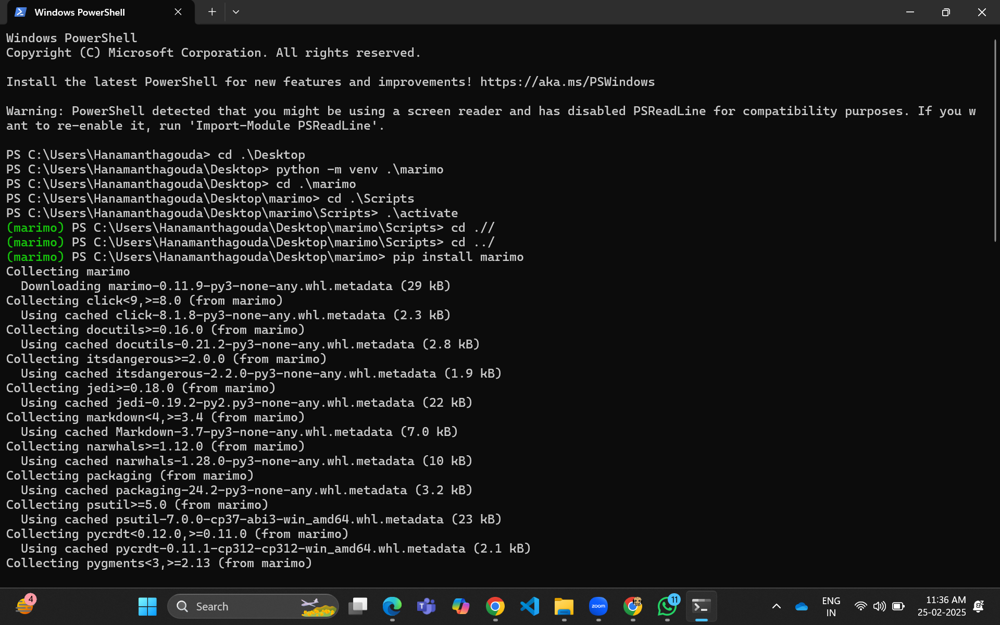
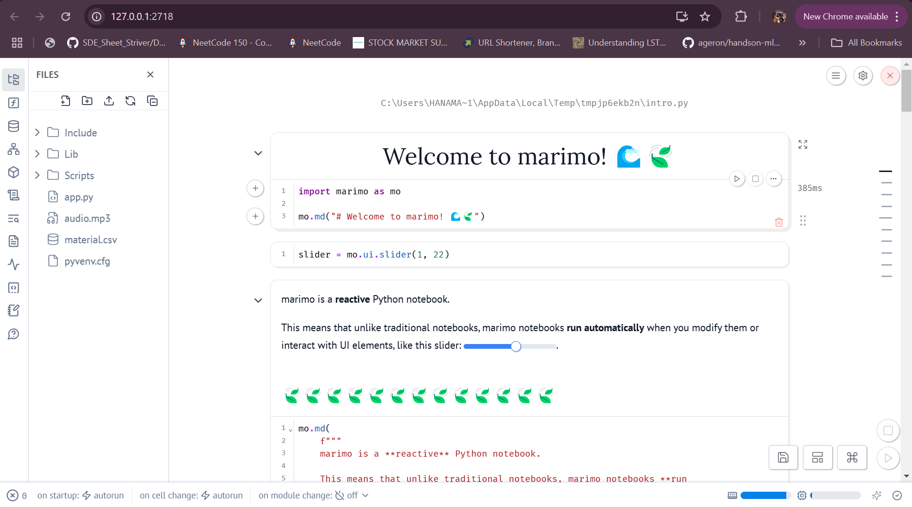
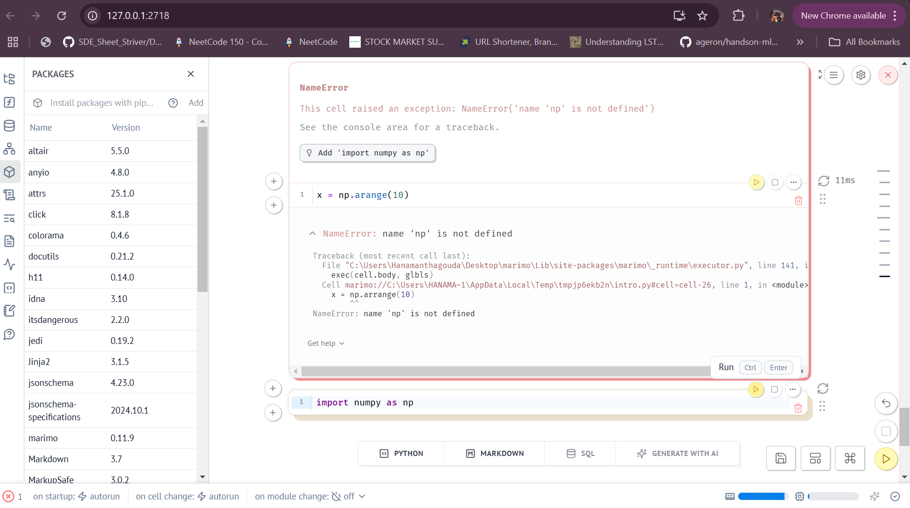
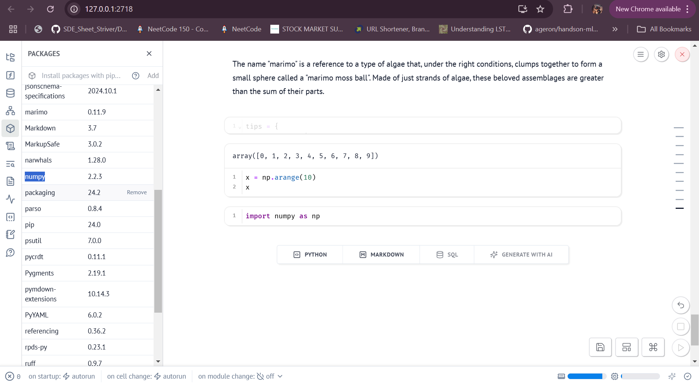
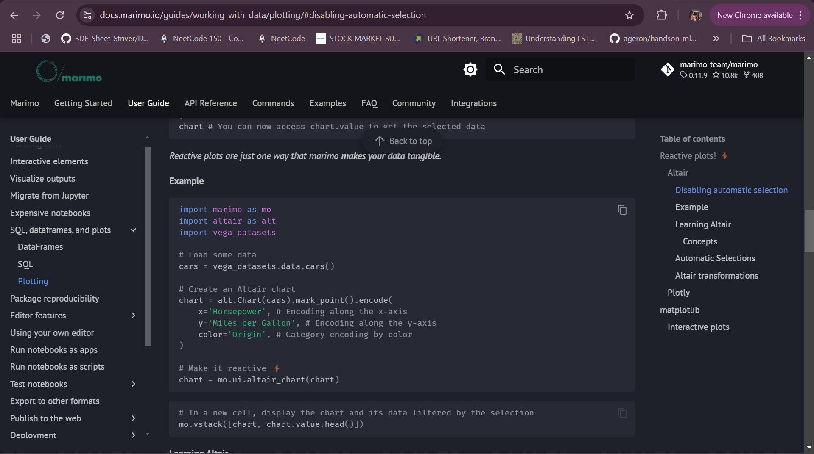
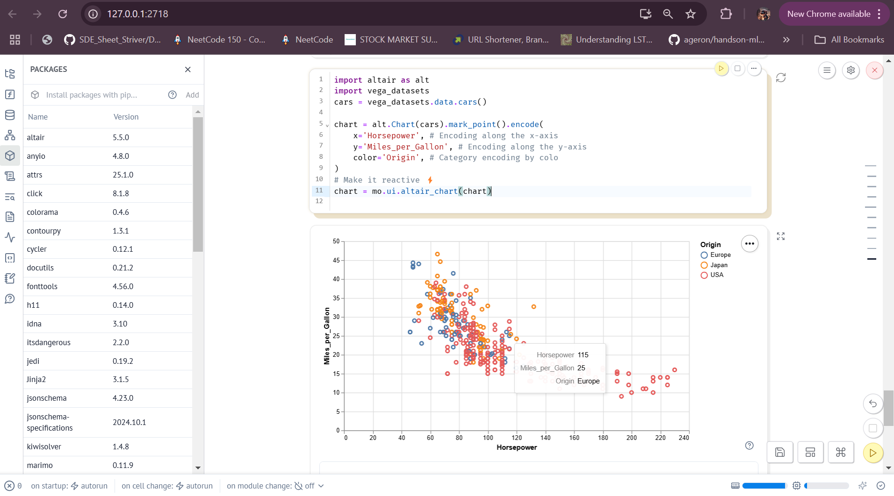
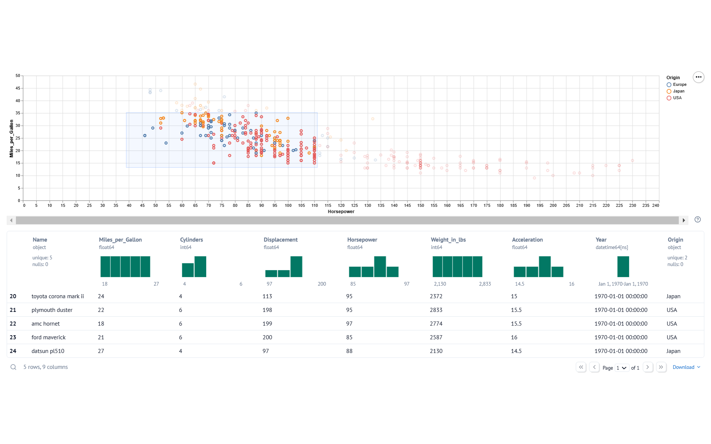
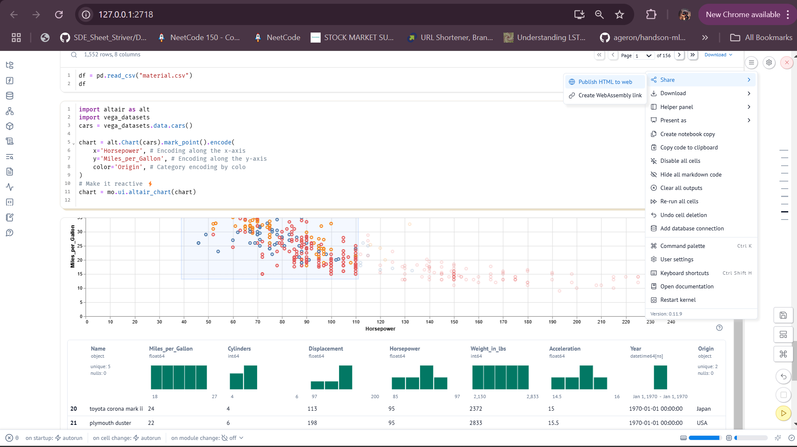
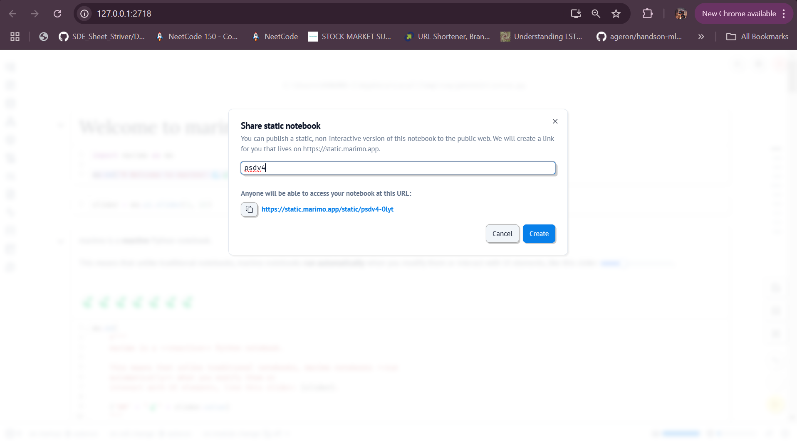
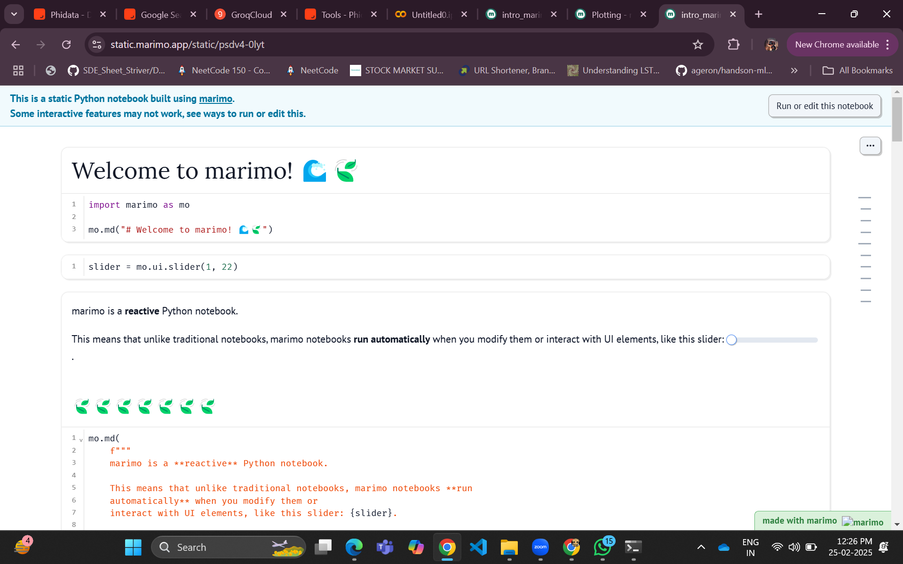

Marimo Notebook is a cutting-edge tool designed for developers who want to create interactive and reactive Python applications effortlessly. Unlike traditional Jupyter Notebooks, Marimo focuses on dynamic updates and user interface components, making it ideal for building dashboards, tutorials, and prototypes.
This guide will walk you through the installation process, key features, practical use cases, and how to leverage Marimo's cloud hosting capabilities. By the end of this blog, you'll understand why Marimo is a game-changer for Python developers.
The first image shows the process of setting up a virtual environment for Marimo. The commands used are:
python -m venv .marimo: This creates a virtual environment named `.marimo`..\Scripts\activate: Activates the virtual environment.pip install marimo: Installs Marimo and its dependencies.The cursor is pointing to the command prompt, which confirms the installation of Marimo by showing the downloaded packages.
The second image shows how to explore Marimo commands. Typing marimo help displays a list of available commands and options. The key commands include:
marimo edit: Create or edit notebooks.marimo run notebook.py: Run a notebook as a read-only app.marimo tutorial intro: Start an interactive tutorial in your browser.The cursor highlights the "Getting started" section, which suggests running the tutorial using the command:
marimo tutorial introThe third image shows how to launch an interactive tutorial. By typing:
marimo tutorial introA browser window opens with a URL like http://127.0.0.1:2718. The cursor points to this URL, indicating that you can copy and paste it into your browser to access the tutorial interface.
The fifth image shows the execution of the marimo tutorial intro command. This command launches an interactive tutorial in your browser. The cursor is pointing at the generated URL:
http://127.0.0.1:2718You can copy this URL and paste it into your browser to access the tutorial interface. This step is crucial for first-time users to explore Marimo's features interactively.
The left panel contains essential tools for development and analysis:
Browse and manage project files:
# File operations are handled through the UI
# No direct code needed - use folder iconsTrack active variables and their values:
population = 1000 # Appears in variables list
mo.md(f"Population: {population}")Connect to SQL databases and run queries:
# Sample SQL integration
results = mo.db.query("SELECT * FROM users")Visualize relationships between code cells:
# Automatic dependency tracking
x = slider.value # Shown as connected nodesInstall/remove Python packages:
# Install packages directly from UI
mo.install("pandas") # Triggers pip installConfigure notebook behavior:
# Example configuration
mo.settings(auto_run=True, theme="dark")The sidebar combines IDE-like functionality with notebook flexibility, letting you focus on coding while keeping key tools one click away.
The image demonstrates how Marimo allows you to create and interact with UI elements seamlessly. On the left, the file explorer displays project files like
app.py, material.csv, and others. On the right, the coding area shows interactive components such as dropdowns and sliders, which can be easily created using Marimo's mo.ui library.
The following code snippet illustrates how to create a dropdown menu and a slider:
# Create a dropdown menu with icons
icon = mo.ui.dropdown(["🌟", "🌊", "🌈"], value="🌟")
repetitions = mo.ui.slider(1, 16, label=f"Number of {icon.value}: ")
mo.md(f"{icon.value} repeated {repetitions.value} times!")
As shown in the image:
This feature makes it easy to build interactive dashboards, educational tools, or prototypes directly within Marimo. The reactive programming model ensures that any changes to UI elements automatically trigger updates in dependent cells, enhancing user experience and productivity.
In a fresh notebook, basic libraries like numpy or pandas may not be pre-imported. As shown in the image, when you attempt to use np.arange(10), Marimo detects the missing import and raises a NameError. It also provides a helpful suggestion to add the missing import statement directly, making it highly efficient for projects with multiple dependencies.
After clicking the "Add 'import numpy as np'" suggestion, Marimo automatically inserts the required import statement into the code cell. This feature is incredibly handy when working on random projects with several dependencies, saving time and reducing errors. The updated code now runs successfully with the necessary library imported.
The image demonstrates Marimo's ability to handle missing packages efficiently. When a library like numpy is not installed, Marimo detects the issue and offers a direct installation option. You can choose from multiple package managers such as pip, poetry, or rye, making it incredibly convenient.
Instead of manually typing pip install numpy, you simply select your preferred manager, click "Install," and Marimo handles the rest. This feature is especially handy for projects with multiple dependencies, saving time and effort.
The tenth image focuses on Marimo's dependencies management system. The cursor points at the Numpy on the left-hand side of the interface, which lists all available dependencies.And also it has files section which allows users to easily navigate between files and manage their projects directly within Marimo.
This image demonstrates one of the most powerful features of Marimo Notebook — its ability to automatically generate a dashboard-like interface for DataFrames. By simply defining a DataFrame with df = pd.read_csv("material.csv"), Marimo instantly provides an interactive summary of the dataset, making it a game-changer for exploratory data analysis (EDA).
Once the DataFrame is loaded, Marimo automatically generates the following insights and tools:
Ro), allowing you to quickly understand data distributions.This feature eliminates the need to write extensive code for basic EDA tasks. Instead of manually calculating statistics or plotting distributions, Marimo does it all automatically. This is particularly useful when working with large datasets or when you need a quick overview before diving deeper into analysis.
# Load a CSV file into a DataFrame
import pandas as pd
df = pd.read_csv("material.csv")
# Automatically generate an interactive dashboard
df # Just display the DataFrame in Marimo
This feature makes Marimo an invaluable tool for data scientists and analysts who want to save time and focus on deeper insights rather than repetitive coding tasks.
The image shows how Marimo's official tutorials make it easy to learn and implement new features. By copying the provided code snippets, you can quickly understand how to use libraries like Altair for reactive plotting. For example, the tutorial demonstrates creating an interactive chart using vega_datasets and making it reactive with mo.ui.altair_chart().
This hands-on approach helps users explore Marimo's capabilities while experimenting with real-world examples, making it an excellent tool for learning new technologies effectively.
Reactive programming is a paradigm that allows applications to respond dynamically to changes in data streams or events. In the image, the Marimo Notebook demonstrates this concept by using Altair and vega_datasets to create an interactive scatter plot. The chart updates automatically in response to user interactions, such as hovering over points to display additional details.
The code snippet below shows how reactive programming is implemented:
import altair as alt
import vega_datasets
# Load dataset
cars = vega_datasets.data.cars()
# Create a scatter plot
chart = alt.Chart(cars).mark_point().encode(
x='Horsepower',
y='Miles_per_Gallon',
color='Origin'
)
# Make the chart reactive
chart = mo.ui.altair_chart(chart)
This approach simplifies creating real-time, interactive visualizations, making it ideal for data exploration and analysis. Reactive programming ensures that any changes in the dataset or user interactions are reflected instantly in the visualization, enhancing user experience and productivity.
This image showcases the incredible power of Marimo Notebook, where a single line of code can generate a detailed, interactive dashboard for data exploration. By simply defining a DataFrame, such as:
mo.vstack([chart, chart.value.head()])Marimo automatically creates a visual dashboard that includes:
Horsepower vs. Miles_per_Gallon), color-coded by origin.The dashboard is highly interactive, allowing users to zoom in on specific areas of the scatter plot or filter data directly from the interface. This feature is particularly useful for exploratory data analysis (EDA), enabling you to derive insights quickly without writing additional code. It’s a game-changer for data scientists and analysts working on large datasets.
Marimo allows you to host your notebook directly. In the image, we are configuring application settings like app title, custom CSS, and auto-download options to prepare the notebook for hosting. This makes it easy to share interactive notebooks with others.

The image highlights Marimo's deployment logs and sharing capabilities. After generating an interactive notebook or dashboard, you can publish it directly to the web using options like "Publish HTML to web" or "Create WebAssembly link." The deployment logs provide real-time feedback on the hosting process, ensuring everything is set up correctly.
Additionally, the sharing menu offers features such as downloading the notebook, presenting it as a standalone app, or copying a shareable link. These tools make it easy to collaborate and distribute your work efficiently.
The image demonstrates how Marimo allows you to publish your notebook as a static, non-interactive version on the web. You can customize the domain name (e.g., psdv4) and generate a shareable link, such as:
https://static.marimo.app/static/psdv4-0lytThis makes it simple to share your work with others without requiring them to install any dependencies or software. The "Create" button finalizes the process, and the notebook is hosted instantly.
The image shows the hosted notebook opened via the generated link (https://static.marimo.app/static/psdv4-0lyt). The notebook is now accessible as a static app, where users can view the content and interact with features like sliders. However, some interactive elements may be limited in functionality due to its static nature.
This hosted notebook demonstrates Marimo's ability to share projects effortlessly, making it ideal for collaboration, presentations, or sharing insights with a broader audience.
Marimo Notebook is a revolutionary tool that combines the simplicity of traditional notebooks with the power of reactive programming and interactive UI elements. It eliminates the need for repetitive coding by automating tasks like EDA, generating dashboards, and managing dependencies. Features like automatic import suggestions, direct package installation, and real-time updates make it incredibly user-friendly.
Additionally, Marimo's ability to host notebooks and share them via custom domains or static links enhances collaboration and accessibility. Whether you're a data scientist exploring datasets, a developer prototyping applications, or an educator creating tutorials, Marimo simplifies your workflow while maximizing productivity.
Its seamless integration of markdown, Python code, and UI components makes it ideal for building interactive applications and sharing insights with minimal effort. If you're looking for a tool that bridges the gap between coding and usability, Marimo is the perfect choice.